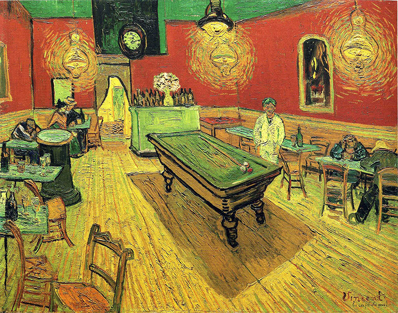
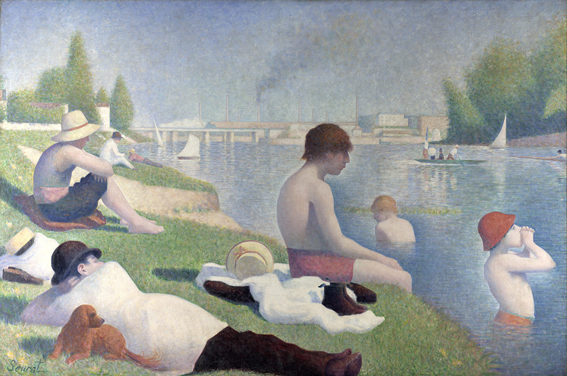

|  |  | 
|
|---|---|---|
| Van Gogh | Georges-Pierre Seurat | jacques-louise david |
| The Night Cafe | Bathers at asnieres | the coronation of napoleon |
| In wildly contrasting, vivid colours, the ceiling is green, the upper walls red, the glowing, gas ceiling lamps and floor largely yellow. The paint is applied thickly, with many of the lines of the room leading toward the door in the back. The perspective looks somewhat downward toward the floor. | The canvas is of a suburban, placid Parisian riverside scene. Isolated figures, with their clothes piled sculpturally on the riverbank, together with trees, austere boundary walls and buildings, and the River Seine are presented in a formal layout. A combination of complex brushstroke techniques, and a meticulous application of contemporary colour theory bring to the composition a sense of gentle vibrancy and timelessness. | The composition is organised around several axes, and incorporates the rules of neoclassicism. One axis is that which passes through the cross and has a vertical orientation. A diagonal line runs from the pope to the empress. All eyes are turned towards Napoleon, who is the center of the composition. |